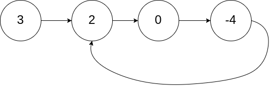
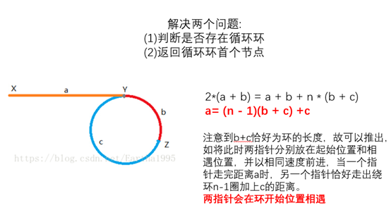

链表精选
摘录了一些经典的链表题，一共16题。
链表
常用方法：
- 方法一：先new一个新的链表 dummy 然后使它指向题目中的head节点，这样能省去很多判断条件，使得代码更好写。最后返回 dummy.next 即可。
- 方法二： 快慢指针法，快指针一次步进2，慢指针一次步进1。
- 方法三：尾插法，可以做出所有反向链表的题目。
快慢指针法
141. Linked List Cycle √
给定一个链表，判断链表中是否有环。
为了表示给定链表中的环，我们使用整数 pos 来表示链表尾连接到链表中的位置（索引从 0 开始）。 如果 pos 是 -1，则在该链表中没有环。
Example 1:
1 | Input: head = [3,2,0,-4], pos = 1 |

- 方法一：HashSet
我们可以使用HashSet的方法实现O（N）时间复杂度，O（N）空间复杂度。1
2
3
4
5
6
7
8
9
10
11
12
13
14
15
16
17
18
19
20
21public class Solution {
public boolean hasCycle(ListNode head) {
HashSet<ListNode> set = new HashSet();
if(head == null)
return false;
else{
set.add(head);
ListNode nextN = head.next;
while(nextN!=null){
if(set.contains(nextN))
return true;
else
set.add(nextN);
nextN=nextN.next;
}
return false;
}
}
} - 方法二：Floyd龟兔赛跑
我们跑步的例子来解释，如果两个人同时出发，如果赛道有环，那么快的一方总能追上慢的一方。进一步想，追上时快的一方肯定比慢的一方多跑了几圈，即多跑的路的长度是圈的长度的倍数。基于上面的想法，Floyd用两个指针，一个慢指针（龟）每次前进一步，快指针（兔）指针每次前进两步（两步或多步效果时等价的，只要一个比另一个快就行）。如果两者在链表头以外的某一点相遇（即相等）了，那么说明链表有环，否则，如果（快指针）到达了链表的结尾，那么说明没有环。提问：时间复杂度是多少？1
2
3
4
5
6
7
8
9
10
11
12
13
14public class Solution {
public boolean hasCycle(ListNode head) {
if(head == null||head.next==null)return false;//the initialized condition
ListNode fast = head;
ListNode slow = head;
while(fast!=null&&fast.next!=null){
slow=slow.next;
fast=fast.next.next;
if(slow == fast)
return true;
}
return false;
}
}
142. Linked List Cycle II √
Given a linked list, return the node where the cycle begins. If there is no cycle, return null.
To represent a cycle in the given linked list, we use an integer pos which represents the position (0-indexed) in the linked list where tail connects to. If pos is -1, then there is no cycle in the linked list.
Note: Do not modify the linked list.
Example 1:
1 | Input: head = [3,2,0,-4], pos = 1 |

1 | public class Solution { |
876. Middle of the Linked List √
给定一个带有头结点 head 的非空单链表，返回链表的中间结点。
如果有两个中间结点，则返回第二个中间结点。
1 | public ListNode middleNode(ListNode head) { |
234. Palindrome Linked List √
Given a singly linked list, determine if it is a palindrome.
Example 1:
1 | Input: 1->2 |
Example 2:
1 | Input: 1->2->2->1 |
使用栈的解法：
1
2
3
4
5
6
7
8
9
10
11
12
13
14
15
16
17
18
19public boolean isPalindrome(ListNode head) {
Stack<Integer> s = new Stack();
if(head==null||head.next==null) return true;
ListNode fast=head,slow=head;
while (fast!=null&&fast.next!=null){
s.push(slow.val);
fast=fast.next.next;
slow=slow.next;
}
if (fast!=null) slow=slow.next;
return isEqual(s,slow);
}
public boolean isEqual(Stack<Integer> s,ListNode head){
while(!s.isEmpty()&&head!=null){
if(s.pop()!=head.val) return false;
head=head.next;
}
return true;
}不使用额外空间的解法：
1
2
3
4
5
6
7
8
9
10
11
12
13
14
15
16
17
18
19
20
21
22
23
24
25
26
27
28
29
30
31
32
33
34
35
36
37
38
39
40
41public boolean isPalindrome(ListNode head) {
if(head==null||head.next==null) return true;
boolean flag=false;
ListNode fast=head,slow=head;
while (fast!=null&&fast.next!=null){
fast=fast.next.next;
slow=slow.next;
}
if (fast==null) flag=true;
cut(head,slow);
slow=flag==true?slow:slow.next;
return isEqual(head,reverse(slow));
}
private boolean isEqual(ListNode l1, ListNode l2) {
while (l1!=null){
if(l1.val!=l2.val) return false;
l1=l1.next;
l2=l2.next;
}
return true;
}
private void cut(ListNode head, ListNode slow) {
ListNode root = head;
while (head.next!=slow){
head=head.next;
}
head.next=null;
}
public ListNode reverse(ListNode root){
ListNode head=new ListNode(0);
while(root!=null){
ListNode next =root.next;
root.next=head.next;
head.next=root;
root=next;
}
return head.next;
}
双指针法
203. Remove Linked List Elements √
Remove all elements from a linked list of integers that have value val\.
Example:
1 | Input: 1->2->6->3->4->5->6, val = 6 |
1 | public ListNode removeElements(ListNode head, int val) { |
160. Intersection of Two Linked Lists √
Write a program to find the node at which the intersection of two singly linked lists begins.
For example, the following two linked lists:

begin to intersect at node c1.
假设A的长度为a，B的长度为b，则总长度为a+b。
假设a=a1+c，b=b1+c 则a1+c+b1==b1+c+a1。
1 | A: a1 → a2 d1 → d2 |
1 | public ListNode getIntersectionNode(ListNode headA, ListNode headB) { |
删除节点
19. Remove Nth Node From End of List √
Given a linked list, remove the n-th node from the end of list and return its head.
Example:
1 | Given linked list: 1->2->3->4->5, and n = 2. |
1 | public ListNode removeNthFromEnd(ListNode head, int n) { |
83. Remove Duplicates from Sorted List ×
Given a sorted linked list, delete all duplicates such that each element appear only once.
Example 1:
1 | Input: 1->1->2 |
Example 2:
1 | Input: 1->1->2->3->3 |
1 | public ListNode deleteDuplicates(ListNode head) { |
本来加了一个dummy，然后判断条件有问题导致前面的重复可以消除而最后连接NULL的重复元素就消除不了。
82. Remove Duplicates from Sorted List II ×
Given a sorted linked list, delete all nodes that have duplicate numbers, leaving only distinct numbers from the original list.
Return the linked list sorted as well.
Example 1:
1 | Input: 1->2->3->3->4->4->5 |
Example 2:
1 | Input: 1->1->1->2->3 |
1 | public ListNode deleteDuplicates(ListNode head) { |
基础的解法
21.Merge Two Sorted Lists √
Merge two sorted linked lists and return it as a new list. The new list should be made by splicing together the nodes of the first two lists.
Example:
1 | Input: 1->2->4, 1->3->4 |
- 循环解法
1 | public ListNode mergeTwoLists(ListNode l1, ListNode l2) { |
- 递归解法：
1 | public ListNode mergeTwoLists(ListNode l1, ListNode l2) { |
445. Add Two Numbers II —
You are given two non-empty linked lists representing two non-negative integers. The most significant digit comes first and each of their nodes contain a single digit. Add the two numbers and return it as a linked list.
You may assume the two numbers do not contain any leading zero, except the number 0 itself.
Follow up:
What if you cannot modify the input lists? In other words, reversing the lists is not allowed.
Example:
1 | Input: (7 -> 2 -> 4 -> 3) + (5 -> 6 -> 4) |
1 | public ListNode addTwoNumbers(ListNode l1, ListNode l2) { |
22. 链表中倒数第 K 个结点 √
题目描述 :
输入一个链表，输出该链表中倒数第k个结点。
1 | public ListNode FindKthToTail(ListNode head,int k) { |
翻转链表
206. Reverse Linked List √
Reverse a singly linked list.
Example:
1 | Input: 1->2->3->4->5->NULL |
- 循环解法：
1 | public ListNode reverseList(ListNode head) { |
- 递归解法：
1 | public ListNode reverseList(ListNode head) { |
92. Reverse Linked List II √
Reverse a linked list from position m to n. Do it in one-pass.
Note: 1 ≤ m ≤ n ≤ length of list.
Example:
1 | Input: 1->2->3->4->5->NULL, m = 2, n = 4 |
自己用了5个指针做出来的
s代表m位置的指针，e代表n位置的指针。为了防止m从1开始使用了dummy头指针。
然后root代表s前一个指针，tail代表e后一个指针
但是胜在好理解，简单粗暴。
1 | public ListNode reverseBetween(ListNode head, int m, int n) { |
25. Reverse Nodes in k-Group √
Given a linked list, reverse the nodes of a linked list k at a time and return its modified list.
k is a positive integer and is less than or equal to the length of the linked list. If the number of nodes is not a multiple of k then left-out nodes in the end should remain as it is.
Example:
Given this linked list: 1->2->3->4->5
For k = 2, you should return: 2->1->4->3->5
For k = 3, you should return: 3->2->1->4->5
只要掌握了reverse这个函数和dummy这个知识点，就能做出来。
1 | public ListNode reverseKGroup(ListNode head, int k) { |
进阶解法
24. Swap Nodes in Pairs ×
Given a linked list, swap every two adjacent nodes and return its head.
You may not modify the values in the list’s nodes, only nodes itself may be changed.
Example:
1 | Given 1->2->3->4, you should return the list as 2->1->4->3. |
循环解法：
1
2
3
4
5
6
7
8
9
10
11
12public ListNode swapPairs(ListNode head) {
ListNode res = head.next;
ListNode first=head,second=head.next;
while(first!=null&&first.next!=null){
ListNode tmp = first.next;
first.next=first.next.next;
tmp.next=first;
first=first.next;
}
return res;
}递归解法
1
2
3
4
5
6
7
8
9
10public class Solution {
public ListNode swapPairs(ListNode head) {
if ((head == null)||(head.next == null))
return head;
ListNode n = head.next;
head.next = swapPairs(head.next.next);
n.next = head;
return n;
}
}725. Split Linked List in Parts —
题目描述：把链表分隔成 k 部分，每部分的长度都应该尽可能相同，排在前面的长度应该大于等于后面的。
Example 1:
1
2
3
4
5
6
7
8Input:
root = [1, 2, 3], k = 5
Output: [[1],[2],[3],[],[]]
Explanation:
The input and each element of the output are ListNodes, not arrays.
For example, the input root has root.val = 1, root.next.val = 2, root.next.next.val = 3, and root.next.next.next = null.
The first element output[0] has output[0].val = 1, output[0].next = null.
The last element output[4] is null, but it's string representation as a ListNode is [].Example 2:
1
2
3
4
5Input:
root = [1, 2, 3, 4, 5, 6, 7, 8, 9, 10], k = 3
Output: [[1, 2, 3, 4], [5, 6, 7], [8, 9, 10]]
Explanation:
The input has been split into consecutive parts with size difference at most 1, and earlier parts are a larger size than the later parts.1
2
3
4
5
6
7
8
9
10
11
12
13
14
15
16
17
18
19
20public ListNode[] splitListToParts(ListNode root, int k) {
ListNode head=root;
int n=0;
while(head!=null){
head=head.next;
n++;
}
ListNode[] res = new ListNode[k];
int mod = n%k;
int size = n/k;
for(int i=0;root!=null&&i<n;i++){
int cnt = size+(mod-->0?1:0);
res[i]=root;
for(int j=1;j<cnt;j++) root=root.next;
ListNode next = root.next;
root.next=null;
root=next;
}
return res;
}328. Odd Even Linked List ×
Given a singly linked list, group all odd nodes together followed by the even nodes. Please note here we are talking about the node number and not the value in the nodes.
You should try to do it in place. The program should run in O(1) space complexity and O(nodes) time complexity.
Example 1:
1
2Input: 1->2->3->4->5->NULL
Output: 1->3->5->2->4->NULLExample 2:
1
2Input: 2->1->3->5->6->4->7->NULL
Output: 2->3->6->7->1->5->4->NULL1
2
3
4
5
6
7
8
9
10
11
12
13
14public ListNode oddEvenList(ListNode head) {
if (head == null) {
return head;
}
ListNode odd = head, even = head.next, evenHead = even;
while (even != null && even.next != null) {
odd.next = odd.next.next;
odd = odd.next;
even.next = even.next.next;
even = even.next;
}
odd.next = evenHead;
return head;
}
61. Rotate List √
Given a linked list, rotate the list to the right by k places, where k is non-negative.
Example 1:
1 | Input: 1->2->3->4->5->NULL, k = 2 |
Example 2:
1 | Input: 0->1->2->NULL, k = 4 |
1 | public ListNode rotateRight(ListNode head, int k) { |
148. Sort List ×
Sort a linked list in O(n log n) time using constant space complexity.
Example 1:
1 | Input: 4->2->1->3 |
Example 2:
1 | Input: -1->5->3->4->0 |
1 | public ListNode sortList(ListNode head) { |
138. Copy List with Random Pointer √
A linked list is given such that each node contains an additional random pointer which could point to any node in the list or null.
Return a deep copy of the list.
The Linked List is represented in the input/output as a list of n nodes. Each node is represented as a pair of [val, random_index] where:
val: an integer representingNode.valrandom_index: the index of the node (range from0ton-1) where random pointer points to, ornullif it does not point to any node.
Example 1:

1 | Input: head = [[7,null],[13,0],[11,4],[10,2],[1,0]] |
Example 2:

1 | Input: head = [[1,1],[2,1]] |
这道题按着3步走就行了
遍历一次链表，将链表复制一次：
1->2->3 变成 1->1->2->2->3->3
将原有的random指针赋予新建的集合，新集合的random指针指向原有集合random的next
将链表分成两个部分
1
2
3
4
5
6
7
8
9
10
11
12
13
14
15
16
17
18
19
20
21
22
23
24
25
26
27
28public Node copyRandomList(Node head) {
if(head==null) return head;
Node phead=head;
while(phead!=null){
Node next=phead.next;
Node tmp = new Node(phead.val);
phead.next=tmp;
tmp.next=next;
phead=next;
}
phead=head;
while(phead!=null){
Node next=phead.next;
Node r=phead.random;
if(r!=null){
next.random=r.next;
}
phead=next.next;
}
phead=head;
Node res=head.next;
while(phead!=null&&phead.next!=null){
Node next=phead.next;
phead.next=next.next;
phead=next;
}
return res;
}